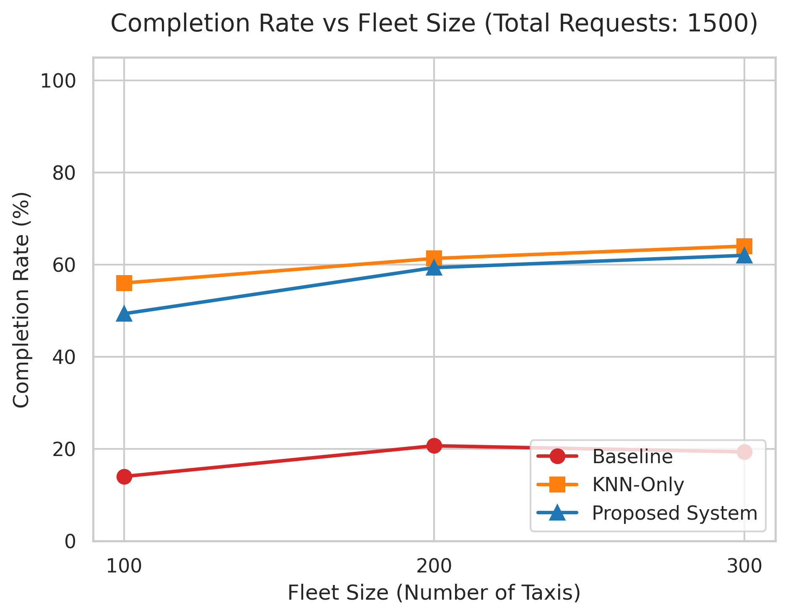
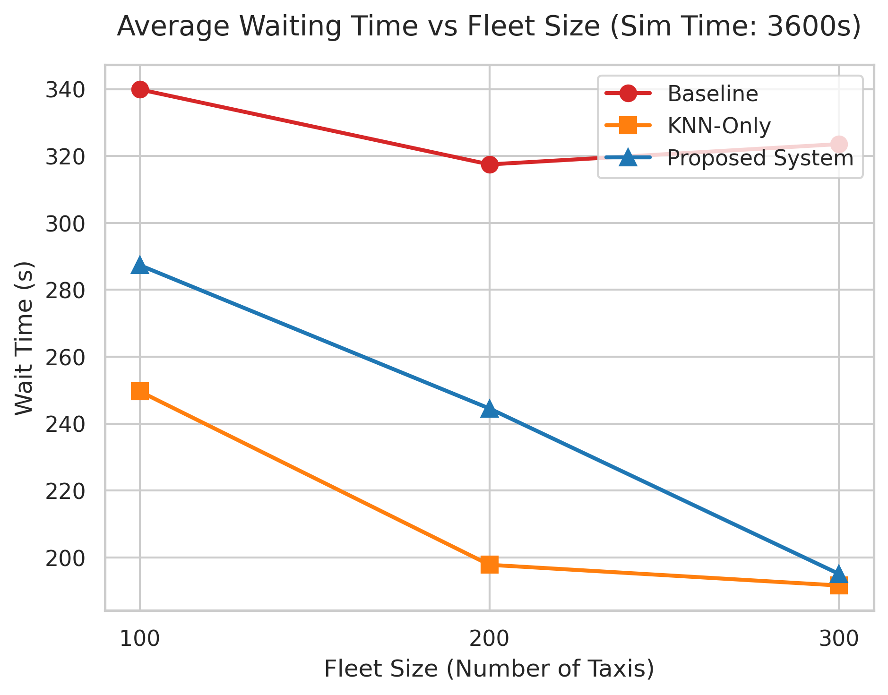
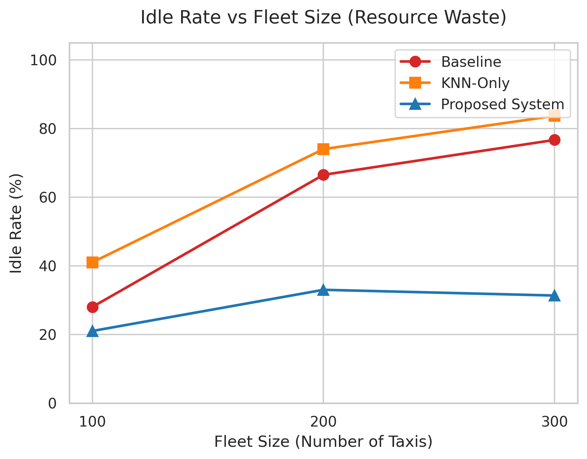

Spatio-Temporal Autonomous Taxi Dispatching (MOD)
基于空间索引的自动驾驶出租车调度系统
The Goal
Optimize fleet utility and minimize passenger wait times using spatial indexing.
1. 空间索引与请求处理
Index Design (空间索引)
- 在 SQLite 中实现了 R-Tree 索引。
- 存储移动出租车的实时坐标 (x, y)。
- 通过 TraCI 接口进行高频位置更新，解决 $O(N)$ 计算瓶颈。
Request Handling (请求处理)
- 生成随机乘客行程请求 (Stochastic requests)。
- 利用 KNN (K-Nearest Neighbor) 查询。
- 毫秒级检索距离乘客最近的空闲出租车。
2. 调度逻辑与状态管理
Dispatch Logic (调度逻辑)
- Python Controller 在数据库层面完成车辆分配。
- 利用 SUMO TraCI 的
setRoute接口。 - 控制自动驾驶出租车精确导航至乘客上车点。
Availability Management (状态管理)
- 严格的状态机流转：
IDLE→PICKUP→OCCUPIED。 - 利用数据库的 Atomic Transactions (原子事务)。
- 彻底避免高并发下的派单冲突。
3. 动态再平衡 (Rebalancing)
- 痛点：城市交通呈潮汐分布，导致局部供需严重失衡。
- 机制：周期性查询数据库，定位“高请求密度、低车辆供给”的热点区域。
- 行动：主动将冗余区域的空闲出租车调度至这些热点区域。
- 意义：打破被动响应模式，实现运力的前瞻性空间部署。
4. SUMO 仿真场景展示
路网与交通流模拟
- 3 km × 3 km 城市网格网络（包含真实路段，>500 edges）。
- 实时展示出租车的调度轨迹与拥堵排队。
请将此处替换为您运行 demo.sh 截取的 SUMO 界面图
(在代码中修改 src="gui_demo.png")

5. 性能评估设定 (Evaluation Scale)
仿真规模
- Background Vehicles: 2,000 辆背景车 (制造真实拥堵)
- Active Taxis: 300 辆出租车
- Passenger Requests: 1,500 个乘客请求
- Time: 3,600s (1小时峰值需求)
核心指标与分析目标
- Average Passenger Wait Time (AWT) - 平均等待时间。
- Taxi Empty-Mile Ratio (Idle Rate) - 空车率。
- 分析目标：研究随着车队密度成倍增加（100→200→300），空间索引与再平衡策略对派单成功率和资源利用率的影响。
6. 评估结果：AWT 与派单成功率
在 300 辆车规模下，纯 KNN 与 Proposed 系统接单效率相近。


原因 (贪心陷阱)：纯 KNN 在热点区“原地接单”，局部响应极快；而 Proposed 系统主动跨区调度时车辆无法接单，产生短时损耗，但保障了全局供需均衡。
7. 评估结果：空车率的断崖式下降
这是 Proposed 调度系统最核心的价值体现。

纯 KNN 导致边缘完成订单的车辆永远 “原地趴窝”，空车率高达 83.7%。
Proposed 系统的再平衡机制成功将空闲率压降至 31.3%！
8. 结论 (Conclusion)
- 系统鲁棒性：基于 R-Tree 和原子事务的架构能够稳定支撑大规模、高并发的调度需求。
- 突破瓶颈：KNN 解决了计算瓶颈，而 Dynamic Rebalancing 解决了空间供需失衡的瓶颈。
- 全局优化：系统有效消灭了运力的无效停滞，实现了车队资源的全局深度激活。